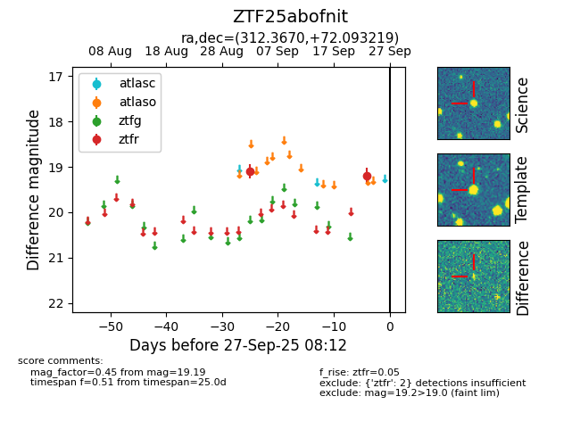

FINK: ZTF25abofnit
Lasair: ZTF25abofnit
ALeRCE: ZTF25abofnit
ZTF25abofnit (ztf,fink)
equatorial (ra, dec) = (312.3670,+72.09322)
galactic (l, b) = (106.6463,+17.40445)

last ztfr=19.19
2 ztfr detections